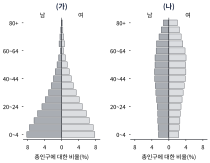
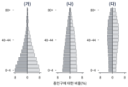
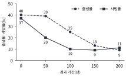
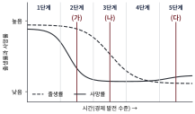
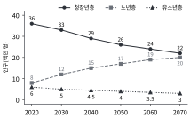
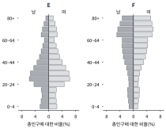
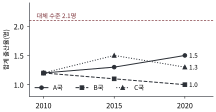
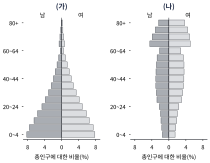

그림은 두 국가의 인구 피라미드이다. 이에 대한 설명으로 옳은 것은? (자료는 가상이다.)

①(가)는 선진국형, (나)는 개발 도상국형의 인구 구조에 가깝다.
②(가)는 (나)보다 청장년층 인구에 대한 유소년층 인구의 비가 크다.
③(나)는 (가)보다 고령화 지수가 낮다.
④(가)는 (나)보다 노년층 비율이 높다.
⑤(나)는 (가)보다 유소년 부양비가 크다.
02
표는 두 국가의 연령층별 인구 비율이다. 이에 대한 설명으로 옳은 것만을 <보기>에서 고른 것은? (단, 유소년 부양비 = 유소년층 ÷ 청장년층 × 100, 노년 부양비 = 노년층 ÷ 청장년층 × 100, 총부양비 = 유소년 부양비 + 노년 부양비, 고령화 지수 = 노년층 ÷ 유소년층 × 100이다. 자료는 가상이다.)
국가
유소년층(%)
청장년층(%)
노년층(%)
B
27
65
8
C
15
66
19
<보 기>
ㄱ. 총부양비는 B가 C보다 크다. ㄴ. 노년 부양비는 C가 B의 2배 이상이다. ㄷ. C의 고령화 지수는 B의 5배 이상이다. ㄹ. 유소년 부양비는 B가 C보다 작다.
①ㄱ, ㄴ
②ㄱ, ㄷ
③ㄴ, ㄹ
④ㄷ, ㄹ
⑤ㄱ, ㄴ, ㄷ
03
그림은 세 국가 (가)~(다)의 인구 피라미드이고, 표는 이 국가들의 출생률과 사망률이다. 이에 대한 설명으로 옳은 것은? (자료는 가상이다.)

국가
출생률(‰)
사망률(‰)
(가)
38
14
(나)
20
7
(다)
10
9
①(나)는 세 국가 중 자연 증가율이 가장 크다.
②(가)는 (다)보다 총부양비가 작다.
③(가)에서 (다)로 갈수록 자연 증가율은 작아지고 노년층 비율은 높아진다.
④(가)에서 (다)로 갈수록 유소년층 비율과 노년층 비율이 모두 낮아진다.
⑤(다)는 (가)보다 사망률이 높아 노년층 비율이 높다.
04
그림은 한 국가의 출생률과 사망률 변화이다. 인구 이동은 없다고 할 때, 이에 대한 설명으로 옳은 것만을 <보기>에서 고른 것은? (자료는 가상이다.)

<보 기>
ㄱ. 자연 증가율이 가장 큰 시기는 50년 차이다. ㄴ. 100년 차에서 150년 차 사이에 자연 증가율은 11 ‰p 줄었다. ㄷ. 처음 50년 동안에는 출생률보다 사망률이 더 크게 낮아졌다. ㄹ. 150년 차에는 인구가 자연 감소하고 있다.
①ㄱ, ㄴ
②ㄱ, ㄹ
③ㄴ, ㄷ
④ㄱ, ㄴ, ㄷ
⑤ㄴ, ㄷ, ㄹ
05
그림의 (가)~(다)는 인구 변천 모형 위의 세 시점이고, 표는 국가 P~R의 자료이다. (가)~(다)에 해당하는 국가를 바르게 연결한 것은? (자료는 가상이다.)

국가
출생률(‰)
사망률(‰)
유소년층(%)
청장년층(%)
노년층(%)
P
20
7
27
65
8
Q
8
12
10
58
32
R
38
14
44
53
3
①(가) P, (나) Q, (다) R
②(가) R, (나) P, (다) Q
③(가) R, (나) Q, (다) P
④(가) Q, (나) P, (다) R
⑤(가) P, (나) R, (다) Q
06
표는 국가 A~D의 합계 출산율이다. 합계 출산율은 한 여성이 가임 기간에 낳을 것으로 기대되는 평균 출생아 수이며, 인구 이동이 없을 때 인구를 유지하려면 2.1명 이상이어야 한다. 이에 대한 설명으로 옳은 것은? (자료는 가상이다.)
국가
A
B
C
D
합계 출산율(명)
1.05
1.6
2.1
3.15
①D의 합계 출산율은 인구를 유지하는 수준의 2배이다.
②C는 인구 이동이 없다면 장기적으로 인구 규모가 유지되는 수준이다.
③A의 합계 출산율은 인구를 유지하는 수준의 3분의 1이다.
④B는 인구를 유지하는 수준에 못 미치지만 인구는 줄어들지 않는다.
⑤B와 D는 모두 인구 이동이 없어도 인구가 줄어든다.
07
표는 한 국가의 현재와 30년 후, 60년 후의 연령층별 인구 비율 전망이다. 이에 대한 설명으로 옳은 것만을 <보기>에서 고른 것은? (단, 유소년 부양비 = 유소년층 ÷ 청장년층 × 100, 노년 부양비 = 노년층 ÷ 청장년층 × 100, 총부양비 = 유소년 부양비 + 노년 부양비, 고령화 지수 = 노년층 ÷ 유소년층 × 100이다. 자료는 가상이다.)
구분
유소년층(%)
청장년층(%)
노년층(%)
현재
15
66
19
30년 후
10
58
32
60년 후
8
50
42
<보 기>
ㄱ. 총부양비는 시간이 지날수록 커진다. ㄴ. 60년 후에는 청장년층 1명이 부양해야 하는 노년층 인구가 약 0.84명이다. ㄷ. 총부양비의 증가 폭은 앞의 30년보다 뒤의 30년이 더 크다. ㄹ. 60년 후의 고령화 지수는 400 미만이다.
①ㄱ, ㄴ
②ㄱ, ㄹ
③ㄱ, ㄴ, ㄷ
④ㄱ, ㄷ, ㄹ
⑤ㄴ, ㄷ, ㄹ
08
표는 두 국가의 연령층별 인구이다. (가)~(라)를 값이 큰 순서대로 바르게 나열한 것은? (단, 유소년 부양비 = 유소년층 ÷ 청장년층 × 100, 노년 부양비 = 노년층 ÷ 청장년층 × 100이다. 자료는 가상이다.)
국가
유소년층(만 명)
청장년층(만 명)
노년층(만 명)
P
210
600
90
Q
120
640
240
(가) P의 유소년 부양비 (나) P의 노년 부양비 (다) Q의 유소년 부양비 (라) Q의 노년 부양비
①(라) > (가) > (나) > (다)
②(라) > (다) > (가) > (나)
③(라) > (가) > (다) > (나)
④(가) > (라) > (나) > (다)
⑤(가) > (라) > (다) > (나)
09
그림은 한 국가의 연령층별 인구 전망이다. 이에 대한 설명으로 옳은 것만을 <보기>에서 고른 것은? (자료는 가상이다.)

<보 기>
ㄱ. 2020년에서 2070년 사이에 총인구는 10 % 줄어든다. ㄴ. 청장년층이 총인구에서 차지하는 비율은 2070년이 2020년보다 20 %p 이상 낮다. ㄷ. 노년 부양비는 2070년이 2020년의 4배 이상이다. ㄹ. 노년층 인구의 증가 폭은 10년 단위로 계속 커진다.
①ㄱ, ㄴ
②ㄱ, ㄹ
③ㄷ, ㄹ
④ㄱ, ㄴ, ㄷ
⑤ㄴ, ㄷ, ㄹ
10
그림은 두 지역 E, F의 인구 피라미드이다. E, F 중 한 곳은 일자리가 많은 대도시이고, 다른 한 곳은 청장년층이 떠나는 농촌이다. 이에 대한 설명으로 가장 적절한 것은? (자료는 가상이다.)

①F는 개발 도상국형 인구 구조로 출생률과 사망률이 모두 높다.
②E에서는 청장년층의 유출이 활발하다.
③E는 청장년층이 유입되는 대도시, F는 청장년층이 유출되어 고령화가 심한 농촌으로 추정된다.
④F는 E보다 청장년층 비율이 높다.
⑤E는 F보다 노년층 비율이 높다.
11
표는 도시 R의 2000년과 2020년 연령층별 인구이다. 이 기간 R의 자연 증가(출생자 수 − 사망자 수)는 모두 합쳐 20만 명이었다. 이에 대한 설명으로 옳은 것만을 <보기>에서 고른 것은? (자료는 가상이며, 인구 증감 = 자연 증가 + 순이동이다.)
구분
유소년층(만 명)
청장년층(만 명)
노년층(만 명)
2000년
30
120
30
2020년
36
190
44
<보 기>
ㄱ. 이 기간 R의 총인구는 90만 명 늘었다. ㄴ. 이 기간 R의 순이동은 +70만 명이다. ㄷ. 총인구 증가분에서 청장년층 증가분이 차지하는 비중은 80 % 이상이다. ㄹ. 청장년층 증가 폭은 유소년층과 노년층 증가 폭의 합보다 크다.
①ㄱ, ㄴ
②ㄱ, ㄷ
③ㄴ, ㄷ
④ㄱ, ㄴ, ㄹ
⑤ㄴ, ㄷ, ㄹ
12
표는 두 국가의 0~4세 인구이다. 성비는 여자 100명당 남자 수이다. 이에 대한 설명으로 옳은 것만을 <보기>에서 고른 것은? (자료는 가상이다.)
국가
남자(만 명)
여자(만 명)
X
560
440
Y
255
245
<보 기>
ㄱ. X의 0~4세 성비는 Y보다 크다. ㄴ. X의 0~4세 성비는 약 127이다. ㄷ. X와 같은 성비 불균형은 사망률 감소 때문에 나타난다. ㄹ. Y의 남자 수는 X의 남자 수의 절반보다 많다.
①ㄱ, ㄴ
②ㄱ, ㄷ
③ㄴ, ㄹ
④ㄷ, ㄹ
⑤ㄱ, ㄴ, ㄹ
13
그림은 세 국가의 합계 출산율 변화이다. A국은 2012년에 출산·양육 지원을 크게 늘렸고, B국은 별다른 정책을 펴지 않았으며, C국은 2012년에 지원금만 일시 지급하였다. 이에 대한 설명으로 옳은 것은? (자료는 가상이다.)

①이 자료만으로 A국의 출산율 상승이 지원 정책 때문임이 입증된다.
②A국은 합계 출산율이 계속 높아졌지만 대체 수준(2.1명)에는 못 미친다.
③B국은 대체 수준에 가까워졌다.
④세 국가 모두 인구 이동이 없다면 인구가 늘어난다.
⑤C국의 2020년 합계 출산율은 2010년보다 낮다.
14
표는 개발 도상국 P의 10년 동안 식량 생산량과 인구 변화이다. 이에 대한 설명으로 옳은 것만을 <보기>에서 고른 것은? (자료는 가상이다.)
구분
10년 전
현재
식량 생산량 지수
100
121
인구 지수
100
134
<보 기>
ㄱ. 인구 증가 속도가 식량 생산량 증가 속도보다 빠르다. ㄴ. 1인당 식량 공급량은 10년 전보다 약 10 % 줄었다. ㄷ. P는 인구 부양력이 충분하다. ㄹ. 해결 방안으로 경제 성장과 식량 확보를 통한 인구 부양력 증대와 출산 억제 정책을 생각할 수 있다.
①ㄱ, ㄴ
②ㄱ, ㄷ
③ㄴ, ㄹ
④ㄷ, ㄹ
⑤ㄱ, ㄴ, ㄹ
15
표는 세 대륙의 연령층별 인구 비율이다. 이에 대한 설명으로 옳은 것은? (고령화 지수 = 노년층 ÷ 유소년층 × 100이며, 자료는 가상이다.)
대륙
유소년층(%)
노년층(%)
아프리카
40
3.5
아시아
24
9
유럽
16
19
①유럽은 유소년층 비율이 가장 높다.
②아프리카는 세 대륙 중 고령화 지수가 가장 높다.
③아시아는 세 대륙 중 노년층 비율이 가장 높다.
④세 대륙 모두 고령화 지수가 100을 넘는다.
⑤고령화 지수는 유럽이 가장 높고 아프리카가 가장 낮다.
16
표는 한 국가의 노년층 비율 변화이다. 노년층 비율이 7 % 이상 14 % 미만이면 고령화 사회, 14 % 이상 20 % 미만이면 고령 사회, 20 % 이상이면 초고령 사회라고 할 때, 이에 대한 설명으로 옳은 것만을 <보기>에서 고른 것은? (자료는 가상이다.)
연도
1990
2000
2010
2018
2025
2035
노년층 비율(%)
5.1
7.0
10.8
14.0
20.0
28.0
<보 기>
ㄱ. 이 국가는 2000년에 고령화 사회에 들어섰다. ㄴ. 고령 사회에서 초고령 사회로 넘어가는 데 걸린 기간은 고령화 사회에서 고령 사회로 넘어가는 데 걸린 기간보다 짧다. ㄷ. 2010년의 이 국가는 고령 사회이다. ㄹ. 2025년 이후에는 노년층 비율이 더 이상 높아지지 않는다.
①ㄱ, ㄴ
②ㄱ, ㄷ
③ㄴ, ㄹ
④ㄷ, ㄹ
⑤ㄱ, ㄷ, ㄹ
17
표는 2050년 한 국가의 연령층별 인구 비율 전망을 네 가지 시나리오로 나타낸 것이다. 이에 대한 설명으로 옳은 것만을 <보기>에서 고른 것은? (단, 유소년 부양비 = 유소년층 ÷ 청장년층 × 100, 노년 부양비 = 노년층 ÷ 청장년층 × 100, 총부양비 = 유소년 부양비 + 노년 부양비이다. 자료는 가상이다.)
시나리오
유소년층(%)
청장년층(%)
노년층(%)
현 추세 유지
10
58
32
(가) 출산 장려 정책
13
57
30
(나) 청장년층 유입
11
61
28
(다) (가)와 (나)를 함께 시행
14
62
24
<보 기>
ㄱ. 총부양비가 가장 작은 시나리오는 (다)이다. ㄴ. (가)는 현 추세에 비해 유소년 부양비는 커지고 노년 부양비는 작아진다. ㄷ. (가)는 현 추세에 비해 총부양비가 작아진다. ㄹ. (나)의 노년 부양비는 현 추세보다 10 %p 이상 낮다.
①ㄱ, ㄴ
②ㄱ, ㄷ
③ㄴ, ㄹ
④ㄷ, ㄹ
⑤ㄱ, ㄷ, ㄹ
18
표는 두 국가의 자료이다. 이에 대한 설명으로 옳은 것은? (자료는 가상이다.)
구분
합계 출산율(명)
노년층 비율(%)
식량 자급률(%)
일자리 상황
(가)
4.8
3
62
일자리 부족이 심각함
(나)
1.1
25
95
생산 연령 인구 감소로 노동력이 부족함
①(가)와 (나)에는 같은 인구 정책이 필요하다.
②(가)에는 출산 장려 정책이, (나)에는 출산 억제 정책이 필요하다.
③(나)에는 식량 확보를 위한 인구 부양력 증대가 가장 시급하다.
④(가)에는 노인 복지 제도의 확대가 가장 시급하다.
⑤(가)에는 식량 확보를 통한 인구 부양력 증대와 출산 억제 정책이, (나)에는 출산 장려 정책과 노인 일자리 창출이 필요하다.
19
다음은 국가 Z의 자료를 이용한 학생의 풀이이다. 풀이에서 잘못된 단계와 올바른 총부양비를 바르게 짝지은 것은? (단, 노년 부양비 = 노년층 ÷ 청장년층 × 100이다. 자료는 가상이다.)
그림은 두 국가 (가), (나)의 인구 피라미드이고, 표는 이 국가들의 연령층별 인구 비율이다. 이에 대한 설명으로 옳은 것만을 <보기>에서 고른 것은? (단, 유소년 부양비 = 유소년층 ÷ 청장년층 × 100, 노년 부양비 = 노년층 ÷ 청장년층 × 100, 고령화 지수 = 노년층 ÷ 유소년층 × 100이다. 자료는 가상이다.)

국가
유소년층(%)
청장년층(%)
노년층(%)
(가)
44
53
3
(나)
10
58
32
<보 기>
ㄱ. (가)의 유소년 부양비는 (나)의 4배 이상이다. ㄴ. (나)의 노년 부양비는 (가)의 10배 이상이다. ㄷ. (나)의 고령화 지수는 (가)의 40배 이상이다. ㄹ. 총부양비는 (가)가 (나)보다 크다.